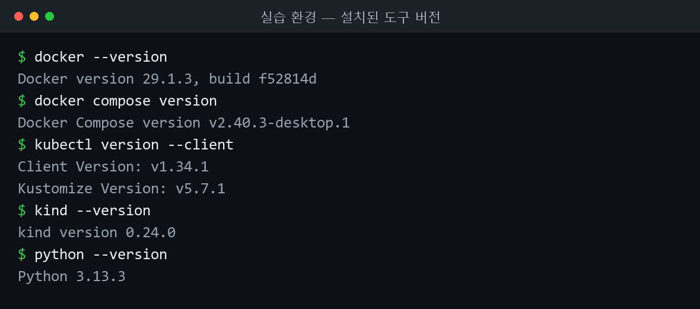
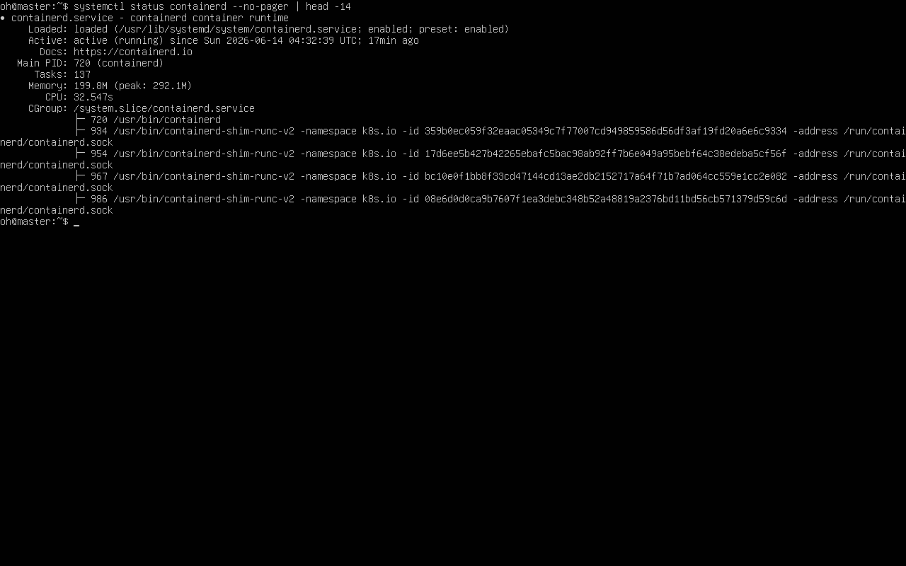
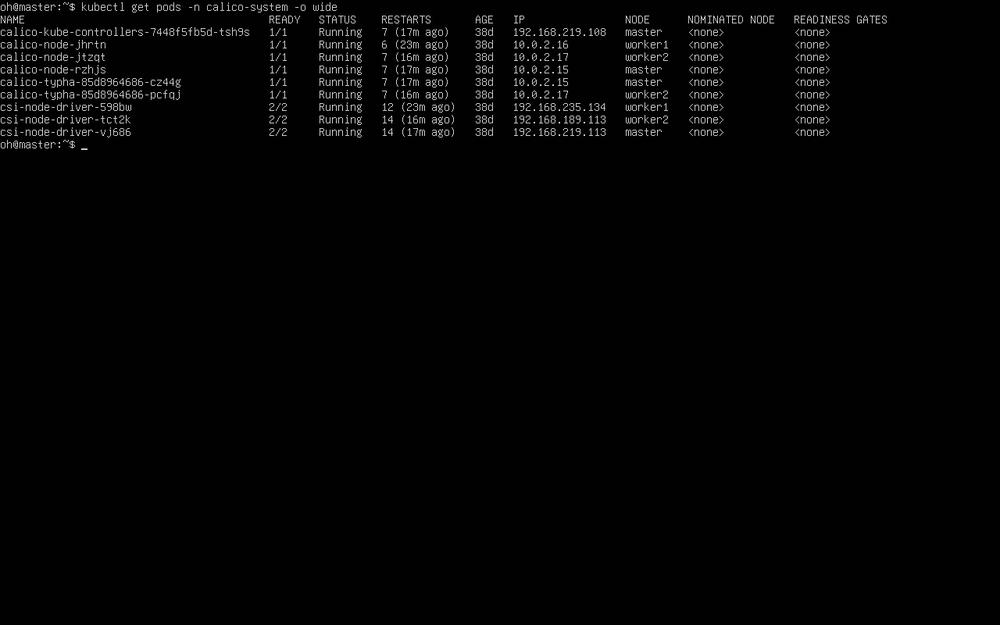
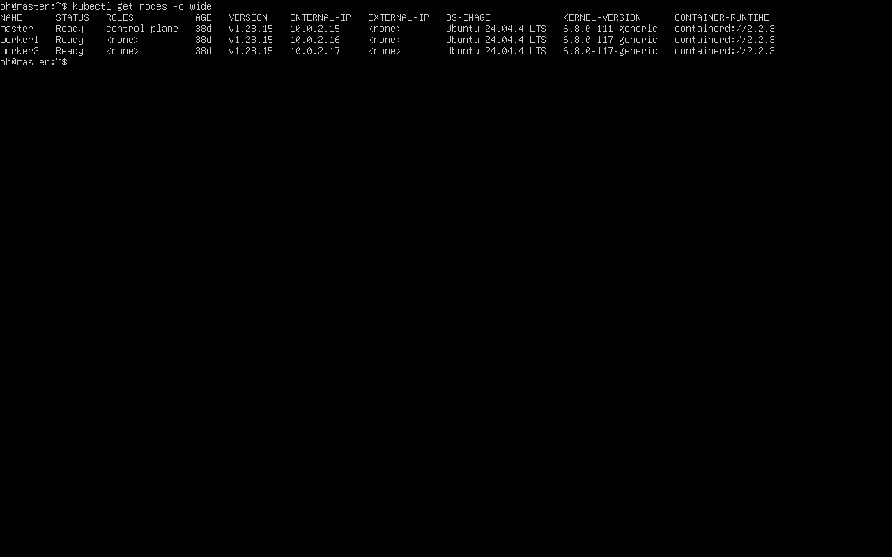

쿠버네티스 기본 구조와 클러스터 구축
쿠버네티스 첫 주차. 기본 구조를 정리한 뒤 kubeadm으로 마스터·워커 2노드 클러스터를 구축하고, 다양한 실습 환경을 둘러봤다.
쿠버네티스 기본 구조
OpenStack은 IaaS로 인프라 자원 자체를 제공하고, 쿠버네티스는 그 위에서 컨테이너를 어디에 띄우고 어떻게 관리할지를 담당하는 컨테이너 오케스트레이션 도구다.
- 클러스터: 컨테이너를 실행하는 노드(서버)의 모음.
- 노드: 클러스터를 구성하는 서버 한 대. control plane(master)은 클러스터를 제어하고, worker는 컨테이너를 구동한다.
- 파드: 최소 컴퓨팅 단위. 보통 컨테이너 1개를 감싸며 자체 가상 IP를 가진다.
구성 도구는 클러스터 생성/관리 kubeadm, 노드 에이전트 kubelet, 명령행 kubectl, 파드 간 네트워크 CNI(Calico)다.

▲ 로컬 환경에서 직접 확인한 실습 도구 버전 — Docker · kubectl · kind · Python.
kubeadm 클러스터 구축
VM을 복제해 master·worker1 두 대를 준비하고, 두 노드에 공통 설정을 한 뒤 마스터를 초기화하는 순서.
단계 1 — 호스트 이름 등록
두 노드가 이름으로 서로를 찾도록 /etc/hosts에 등록.
sudo vim /etc/hosts
# 아래 두 줄 추가
# 210.117.212.111 master
# 210.117.212.80 worker1
단계 2 — 커널 모듈과 sysctl
네트워킹에 필요한 모듈을 로드하고 sysctl 값을 설정.
cat <<EOF | sudo tee /etc/modules-load.d/k8s.conf
overlay
br_netfilter
EOF
sudo modprobe overlay
sudo modprobe br_netfilter
cat <<EOF | sudo tee /etc/sysctl.d/k8s.conf
net.bridge.bridge-nf-call-iptables = 1
net.bridge.bridge-nf-call-ip6tables = 1
net.ipv4.ip_forward = 1
EOF
sudo sysctl --system
단계 3 — 도커와 containerd 설정
도커(containerd 포함)를 설치하고 cgroup 드라이버를 systemd로 맞춤. 빠지면 kubelet과 충돌.
sudo apt-get install docker-ce docker-ce-cli containerd.io docker-buildx-plugin docker-compose-plugin
# 기본 설정 파일 생성
containerd config default | sudo tee /etc/containerd/config.toml > /dev/null
sudo vim /etc/containerd/config.toml
# SystemdCgroup = true 로 수정
sudo systemctl restart containerd
sudo systemctl enable containerd
sudo systemctl status containerd

▲ master 노드
systemctl status containerd — active (running), 컨테이너 런타임 정상 동작.
단계 4 — swap 끄기와 방화벽 비활성화
kubelet은 swap이 켜져 있으면 동작을 거부. swap을 끄고 /etc/fstab에서도 제거한 뒤 방화벽 비활성화.
sudo -i
swapoff --all
free -h
vim /etc/fstab # swap 항목 주석 처리
sudo ufw disable
shutdown -r now
단계 5 — 쿠버네티스 설치
v1.28 저장소를 등록해 세 도구를 설치하고 apt-mark hold로 버전 고정.
sudo apt-get install -y kubelet kubeadm kubectl
# 자동 업그레이드로 버전이 어긋나는 것을 막는다
sudo apt-mark hold kubelet kubeadm kubectl
sudo systemctl enable --now kubelet.service
단계 6 — 마스터 노드 초기화
이미지를 미리 받고 kubeadm init으로 control plane 구성. CRI 소켓과 파드 네트워크 대역 명시.
kubeadm config images pull --cri-socket /run/containerd/containerd.sock
kubeadm init \
--apiserver-advertise-address=210.117.212.111 \
--pod-network-cidr=192.168.0.0/16 \
--cri-socket /run/containerd/containerd.sock
# 초기화에 실패하면 정리 후 다시 시도
# sudo kubeadm reset cleanup-node
# sudo systemctl restart kubelet
kubeadm init 출력의 join 명령
(실습 화면 캡처)
단계 7 — kubeconfig 복사
일반 사용자가 kubectl을 쓸 수 있도록 kubeconfig 복사.
mkdir -p $HOME/.kube
sudo cp -i /etc/kubernetes/admin.conf $HOME/.kube/config
sudo chown $(id -u):$(id -g) $HOME/.kube/config
단계 8 — CNI(Calico) 설치
초기화 직후 노드는 NotReady. CNI가 없기 때문. Calico 설치 후 노드가 Ready로 바뀜.
kubectl create -f https://raw.githubusercontent.com/projectcalico/calico/v3.28.1/manifests/tigera-operator.yaml
wget https://raw.githubusercontent.com/projectcalico/calico/v3.28.1/manifests/custom-resources.yaml
kubectl create -f custom-resources.yaml
# 파드가 모두 Running이 될 때까지 지켜본다
watch kubectl get pods -n calico-system
kubectl get node -o wide

▲
kubectl get pods -n calico-system -o wide — calico-node·typha·csi 파드가 세 노드에서 Running(CNI 정상).
워커 노드 join
워커에 kubeconfig를 복사하고, 마스터가 출력한 join 명령으로 합류. 토큰 만료 시 마스터에서 재발급.
# 워커 노드에서
mkdir -p $HOME/.kube
scp -p ubuntu@210.117.212.111:~/.kube/config ~/.kube/config
sudo -i
kubeadm join 210.117.212.111:6443 \
--token <토큰> \
--discovery-token-ca-cert-hash sha256:<해시> \
--cri-socket /run/containerd/containerd.sock
# 마스터에서: 토큰 만료 시 join 명령 재발급
kubeadm token create --print-join-command
마스터에서 노드 목록 확인. master·worker1이 모두 Ready면 완료.
kubectl get nodes

▲ VirtualBox에 직접 구축한 3노드 kubeadm 클러스터(v1.28.15)에서
kubectl get nodes -o wide — master·worker1·worker2 모두 Ready, 런타임 containerd.
다양한 환경에서의 쿠버네티스
kubeadm 직접 구축 외에 목적에 따라 선택지가 있다. 웹 플레이그라운드(카타코다, Play with Kubernetes), 로컬/경량(도커 데스크톱, Rancher Desktop, K3s, Vagrant), 매니지드(AWS EKS, Azure AKS).
kubectl 설치
어떤 환경이든 클러스터를 다루는 도구는 kubectl.
# macOS
brew install kubernetes-cli
# 윈도우
choco install kubernetes-cli
# 리눅스 (바이너리 직접 설치)
curl -Lo ./kubectl https://storage.googleapis.com/kubernetes-release/release/v1.18.8/bin/linux/amd64/kubectl
chmod +x ./kubectl
sudo mv ./kubectl /usr/local/bin/kubectl
경량 — K3s
도커와 연동되는 경량 배포판. 한 줄로 설치하며 traefik을 끄고 kubeconfig 권한 지정.
curl -sfL https://get.k3s.io | sh -s - --docker --disable=traefik --write-kubeconfig-mode=644
매니지드 — AKS / EKS
명령 몇 줄로 단일 노드 클러스터 생성. EKS는 eksctl로 만든다. 단일 노드라도 시간당 과금되므로 실습 후 삭제.
# Azure AKS
az aks create --resource-group kiamol --name kiamol-aks --node-count 1 \
--node-vm-size Standard_DS2_v2 --kubernetes-version 1.18.8 --generate-ssh-keys
az aks get-credentials --resource-group kiamol --name kiamol-aks
어떤 방법으로 만들었든 생성된 클러스터는 동일하게 동작하므로 확인은 같다.
kubectl get nodes
막혔던 점
kubeadm initpreflight 실패 →sudo kubeadm reset cleanup-node후systemctl restart kubelet, 다시init.- kubelet이 계속 죽음 → swap 때문.
swapoff --all+/etc/fstabswap 항목 주석 처리. - 파드 Pending / 노드 NotReady → CNI 미설치 또는 대역 불일치.
--pod-network-cidr=192.168.0.0/16에 맞춰 Calico 설치. - containerd cgroup 오류 →
/etc/containerd/config.toml에서SystemdCgroup = true로 수정 후 재시작. kubectlconnection refused →admin.conf를$HOME/.kube/config로 복사, 소유권 변경.- join 토큰 만료(24시간) → 마스터에서
kubeadm token create --print-join-command로 재발급.